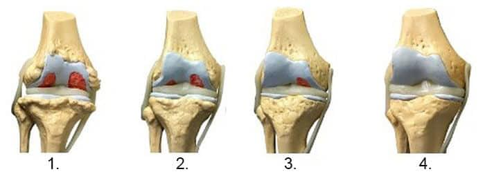
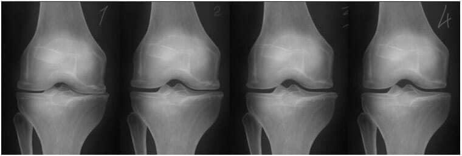

O româncă de 72 de ani ne-a povestit cum a scăpat definitiv de durerea articulară și a alergat la un maraton de 42 km.
Medicii încă nu știu cum să refacă articulațiile deteriorate și farmaciile vând medicamente frumos ambalate, cu promisiuni deșarte privind eficiența lor, însă, în realitate, vor doar să ia cât mai mulți bani de la persoanele cu dizabilități.
La 72 de ani, Otilia are rezistența, energia și sănătatea pentru care ar fi invidiată de femei și bărbați de 40 de ani, dar lucrurile nu au stat mereu astfel.
Toată viața a locuit în București. După 40 de ani, a început să sufere de dureri articulare. La 42, avea deja osteocondroză, sciatică și artrită. Iar la 68 de ani, a devenit invalidă, cu diagnosticul de coxartroză a articulației șoldului. Articulațiile ei erau aproape complet uzate, abia se putea mișca și putea să meargă doar cu ajutorul bastonului, iar după un an, a fost nevoită să apeleze la scaunul cu rotile.
 Potrivit Organizației Mondiale a Sănătății, articulațiile
deteriorate sunt cauza a până la 91% din cazurile de dezvoltare a diferitelor boli:
de la boli ale tractului gastrointestinal la accidente vasculare cerebrale și
atacuri de cord
Potrivit Organizației Mondiale a Sănătății, articulațiile
deteriorate sunt cauza a până la 91% din cazurile de dezvoltare a diferitelor boli:
de la boli ale tractului gastrointestinal la accidente vasculare cerebrale și
atacuri de cord
Pensia nu îi ajungea niciodată să cumpere medicamentele scumpe. Având în vedere că avea o vârstă înaintată, a decis să aibă grijă de articulații și durerea de spate. Ca urmare, după doi ani, a învins invaliditatea. La 70 de ani, medicul care a examinat-o a fost șocat de cât de sănătoasă era: „Dacă ai participa la o competiție de atletism sau alergare mâine, sigur ai câștiga.”
Dar cel mai uimitor lucru a fost că, la 72 de ani, Otilia a alergat la cel mai dificil maraton, de peste 42 km și a câștigat trofeul internațional onorific.
Cum și-a recuperat complet articulațiile dureroase și cum a reușit să câștige la această vârstă trofeul internațional onorific și admirația românilor?
Otilia împărtășește secretul ei cu cititorii noștri
Reporter: Otilia, prima întrebare este: cum vă mențineți vigoarea, sănătatea, entuziasmul și chiar reușiți să câștigați și trofee la această vârstă? Care este secretul dvs.?
Să fiu sinceră, nu am fost întotdeauna așa. Am lucrat toată viața într-o fabrică, întinzându-mi spatele câte opt ore pe zi, timp de 25 de ani. La 42 de ani, eram atât de rigidă, încât nu-mi puteam îndrepta corpul. Am fost tratată în spital mai mult de două săptămâni și am fost diagnosticată cu osteocondroză în stadiul 4. Pe atunci, aveam deja artrită și articulația șoldului mă durea periodic. După numai un an, am fost deja nevoită să umblu cu ajutorul unui baston, iar după câteva luni, efectiv a trebuit să folosesc un scaun cu rotile.
Medicul mi-a prescris o mulțime de medicamente. Acum nici nu-mi mai amintesc cum se numesc, erau foarte multe. Pilulele au funcționat, dar nu pentru mult timp. Dacă uitam să iau o singură pilulă, după câteva ore, începea o durere intensă și leșinam. Pot spune că nu s-a schimbat nimic la nivelul articulațiilor mele, de zeci de ani. Medicii încă nu știu cum să refacă articulațiile deteriorate și farmaciile vând medicamente frumos ambalate, cu promisiuni deșarte privind eficiența lor, însă, în realitate, vor doar să ia cât mai mulți bani de la persoanele cu dizabilități.
Pe atunci, nu mai puteam lucra. Trebuia să stau jos sau întinsă. Luam câte un pumn de pastile pe zi și le dădeam farmaciilor toți banii pe care i-am câștigat cu greu în 25 de ani de muncă grea.
20 de ani de invaliditate
Am fost invalidă timp de 20 ani. Imaginați-vă numai chinurile prin care am trecut! Și în acești 20 de ani, niciun medic nu m-a putut ajuta. După ce am împlinit 70 de ani, am realizat că mai am de trăit trei-patru, poate cinci ani. Nu mă simțeam bine. Dacă m-aș fi trezit simțindu-mă bine, fără să mă doară nimic, nu aș fi fost surprinsă să aflu că m-am trezit, de fapt, în rai.
Poate că aș fi murit atunci dacă nu aș fi avut o nepoată minunată. Soțul ei lucrează la Centrul de Cercetare pentru Reumatologie din București. El mi-a spus că dacă vreau să-mi refac articulațiile deteriorate, în primul rând, trebuie să normalizez echilibrul lichidului sinovial, iar pentru aceasta, trebuie să curăț limfa. Și dacă voi reuși să-mi curăț limfa, voi continua să trăiesc. Mi-a explicat printr-un exemplu simplu.
Ce se întâmplă cu o mașină dacă nu îi schimbi uleiul care îi lubrifiază piesele? Bineînțeles! Se deteriorează. Piesele se strică și nu vei mai putea folosi mașina.
Același lucru este valabil și pentru lichidul limfatic. Acesta transportă nutrienții la toate organele și elimină reziduurile din corp. Între timp, reziduurile și toxinele care se acumulează în sistemul limfatic pe parcursul anilor otrăvesc corpul. Iar articulațiile și coloana vertebrală sunt primele care suferă, deoarece cartilajul este susceptibil la impuritățile din limfă.
Lichidul limfatic contaminat declanșează nu numai boli articulare, ci și peste 87% dintre bolile care apar la 50, 60 și 70 de ani.
El mi-a dat instrucțiuni clare:
- Curăță lichidul limfatic
- Refă echilibrul sinovial
- Reconstruiește articulațiile curățate și care funcționează corespunzător cu ajutorul colagen și al condroitinei
Doar 3 etape
După ce am primit acest sfat de la soțul nepoatei mele, am fost foarte surprinsă. Timp de 20 de ani NICIUN DOCTOR NU MI-A SPUS ACESTE LUCRURI!
Am urmat imediat sfaturile primite. Și știți ce s-a întâmplat după aceea? După șase luni, am scăpat de scaunul cu rotile, iar după un an, eram deja perfect sănătoasă! În plus, mi-a recomandat să fac exerciții. La 70 de ani, am început să alerg, iar la 72 de ani, anul acesta, am alergat la cel mai mare maraton internațional, de peste 40 km, și am câștigat un trofeu.
Până nu demult, eram în scaunul cu rotile și mă pregăteam pentru moarte, iar după numai doi ani, pot să alerg și să câștig un trofeu, sub privirile admirative a sute de oameni. Nu e un miracol?
Reporter: Povestea dvs. este un adevărat miracol! Chiar vă admir. Sunteți o persoană foarte puternică. Dar de ce credeți că medicii vorbesc atât de puțin despre recuperarea articulațiilor și metode de prelungire a vieții? Ce fel de conspirație este aceasta?
Spune-mi, cine are nevoie de oameni în vârstă? Bătrânii sunt o povară pentru toată lumea. Nu este profitabil să-i tratăm și să le prelungim viața, deoarece, cu cât trăim mai mult, cu atât trebuie să ne plătească mai mult timp pensiile. Bătrânii sunt o povară pentru orice economie. Prin urmare, nimeni nu se gândește să ne extindă viața.
De asemenea, tratamentul bolilor în prezent (în special cele ale sistemului musculo-scheletic) este o afacere de miliarde de dolari. Gândește-te câți bani cheltui pe pastile și medici. Apoi gândește-te câți pacienți ca tine există - și toți plătesc pentru pastile și medici. Prin urmare, nu este profitabil pentru farmaciști să mențină oamenii sănătoși. Este mult mai profitabil să le dai medicamente ineficiente care ajută doar temporar.
Doar noi dorim să trăim mai mult, nimeni nu mai dorește acest lucru, așa că trebuie să ne bazăm pe noi înșine pentru a ne vindeca. Să iei pastilele prescrise de medic nu este o soluție, cu siguranță. Dacă vrei să trăiești mai mult și să te bucuri de viață - există o singură cale.
Reporter: Ne puteți spune mai exact cum v-ați recuperat articulațiile?
De fapt, acum este mai ușor ca niciodată. Mai demult, trebuia să culegi sau să comanzi plante speciale, să prepari un medicament din ele și să-ți cureți limfa câteva luni (prima curățare a durat aproximativ șase luni!). Apoi, să comanzi alte plante speciale pentru a reface echilibrul sinovial. Și abia după aceea poți începe să iei colagen și condroitină. De obicei, acest proces durează mai mult de un an.
Dar acum, nu mai trebuie să faci toate acestea, iar procedura de recuperare cuprinde deja toate aceste etape. În două luni vei fi ca nou!
Există o cremă foarte bună care combină deja toate elementele pentru o recuperare completă și se numește . Conține microelemente pentru toate cele trei etape ale recuperării - curățarea limfei, refacerea echilibrului sinovial și asimilarea de colagen și condroitină. Mai conține și glucozamină. Dar cel mai important lucru este că aceste trei etape se desfășoară în paralel și nu durează mai mult de două-trei luni. Este necesar să folosiți crema de 2-3ori pe zi și atât.
Vă recomand tuturor să parcurgeți aceste trei etape o dată la doi-trei ani. Veți trăi 80-100 de ani, poate chiar 120 dacă faceți acest lucru. În același timp, nu veți simți dureri articulare și veți fi activi și veseli. Credeți-mă, e mult mai bine decât să te simți ca un bătrân care-și trăiește ultimii ani!
Metoda despre care ne-a spus alergătoarea la maraton pare să funcționeze și să fie foarte eficientă. Chiar este adevărat? Înainte de a publica materialul și de a-l pune la dispoziția cititorilor, am decis să consultăm un om de știință român renumit, principalul specialist al Centrului European pentru Dezvoltare Biotehnologică, Dr. Radu Hoban
Reporter: Dr. Hoban, credeți că o astfel de metodă în trei etape poate cu adevărat să refacă articulațiile?
Da, așa este. Limfa curată este esențială pentru sănătate. Iar refacerea lichidului sinovial oferă protecție adecvată împotriva distrugerii premature a discului articular. Desigur, doamna Otilia descrie toate procesele care au loc în corp în termeni simpli, dar, în general, a explicat foarte bine.
În prezent, tot mai mulți medici consideră că refacerea echilibrului ar trebui să fie obligatorie pentru toate persoanele trecute de 40 de ani. Iar dacă munca unei persoane presupune activitate fizică, aceste proceduri trebuie făcute mai devreme. După ce urmezi o astfel de procedură o dată după vârsta de 30 de ani, ești protejat garantat de boli articulare pentru încă 10 ani.
Reporter: Ne puteți spune mai multe despre cremă ? Ce tip de supliment este acesta?
este un supliment produs în România. În prezent, este considerat cel mai eficient supliment pentru tratamentul și recuperarea articulațiilor.
conține două ingrediente active principale, Ulei de ficat de rechin, pentru curățarea limfei, și chitosan pentru refacerea echilibrului lichidului sinovial. cremă mai conține și niveluri ridicate de colagen, glucozamină și condroitină, care sunt importante pentru recuperare și întărire.
Datorită formulei sale științifice, este eficient în tratamentul diferitelor boli articulare:
- artrită
- artroză
- coxartroză
- osteoartrită
- spondiloză
- osteocondrita
- osteoporoză
- gonartroză
declanșează un proces natural de recuperare, țesutul cartilajului primește celule noi și începe să se reînnoiască, menținând procesul de regenerare pe parcursul a mai multor ani.
Am studiat acest produs la Centrul European pentru Dezvoltare Biotehnologică. Vreau să vă prezint rezultatele acestui studiu. La studiu au participat 270 de voluntari.
- Limfa este complet curățată de toxine și alte impurități - 96% dintre participanții la studiu
- Lichidul sinovial a ajuns din nou la cantitatea necesară pentru funcționarea corespunzătoare a sistemului musculo-scheletic - 98% dintre participanții la studiu
- Articulația a revenit la forma inițială - 94% dintre participanții la studiu
- Dinamica creșterii țesutului cartilajului a crescut - 74% dintre participanții la studiu
- Eficiența tratamentului bolilor cronice a crescut - 99% dintre participanții la studiu

1. Lipsa alimentației articulației. Țesutul
cartilaginos se distruge.
2. Regenerarea țesutului cartilaginos al articulației după 2
săptămâni de utilizare a „”.
3. Regenerarea țesutului cartilaginos al articulației după 3
săptămâni de utilizare a „”.
4. Articulație sănătoasă după terminarea curei cu „”.
- Imaginea radiografică de mai jos prezintă un model tipic de regenerare a articulației genunchiului.

- Datorită „” vă puteți vindeca bolile acasă timp de o lună sau două. „” nu îngheață, nu anesteziază, ci „repornește" organismul la nivel celular. Elimină cauza durerii în sine și readuce articulațiile la starea inițială, normală.
Pe lângă Ulei de ficat de rechin și chitosan, mai conține 50 de macro- și microelemente benefice pentru articulații și coloana vertebrală. Nu le voi menționa pe toate, dar pot spune că acestea sunt foarte complexe și țintesc îmbunătățirea recuperării întregului sistem musculo-scheletic.
Important! Oamenii de știință au ajuns la concluzia că toamna toamnavara este cel mai bun anotimp pentru a începe tratamentul bolilor articulare. Prin scăderea temperaturii medii, metabolismul este accelerat, circulația sângelui este crescută, fluxul de sânge și oxigen către organele interne este crescut, efectul utilizării cremei este îmbunătățit.
Reporter: De unde se poate cumpăra și cât costă?
Pentru a atrage atenția oamenilor asupra produsului de la până la , se va derula un program, iar cremă va putea fi comandat cu reducere. Cred că efectul „din vorbă în vorbă” va fi foarte puternic și toți cei care vor obține rezultate excelente după utilizarea produsului îl vor recomanda și prietenilor.
Comentarii
Darius A.
Am citit articolul. Și eu am aceeași problemă. Nici mie nu mi-a spus niciun medic despre o astfel de metodă de vindecare. E bine că nu trebuie să culegi chiar tu plantele și să pierzi timpul cu asta. Toate ingredientele sunt deja disponibile în cremă . L-am comandat, cu siguranță îl voi încerca!
Dr. Hoban
Darius A., niciun doctor n-o să vă povestească despre acest produs. Din păcate, medicii și companiile farmaceutice sunt într-o strânsă legătură, pentru ele acest lucru este nerentabil.

Paul Filip
Am comandat și eu. Am auzit despre mai demult. Mulți oameni îl laudă, dar nu știam de unde îl pot cumpăra. Acum știu și există și reducere!

Iulian F.
Mulțumesc!
Natalia D.
cremă este grozav! Nu am probleme majore și nu sunt în scaun cu rotile, dar mă doare spatele de peste 10 ani. Și niciun doctor nu mă poate ajuta! Și eu am luat o mulțime de pastile, dar toate au fost inutile! Am cumpărat și după două săptămâni, durerea a dispărut! Este un miracol! Mulțumesc din nou pentru această descoperire!
Dr. Hoban
Natalia D., cei mai mulți oameni sunt siguri că durerile de spate nu sunt o problemă serioasă. Din alt punct de vedere, durerea este o atenționare asupra dereglărilor din cadrul sistemului locomotor. Pentru a evita înrăutățirea situației, se recomandă să începeți tratamentul la stadiile incipiente.
Natalia D.
Dr. Hoban, sunt total de acord cu dumneavoastră. Din păcate, ritmul vieții îi face pe oameni să neglijeze acest fapt, amintindu-și numai în stadiile avansate.

Ioan Simion
L-am folosit 2 luni. Durerea de genunchi a dispărut. Am început să mă simt mult mai bine, chiar am început să alerg dimineața. Am comandat încă două pachete de rezervă. Îl recomand tuturor!
Lala P.
Și eu mă chinui cu durerea de genunchi, trebuie să comand!

Adrian D.
Vecinul meu mi-a spus despre un medic care laudă acest supliment. El l-a sfătuit să
cumpere acest produs cât mai curând posibil, cât timp mai există reduceri.
Dr. Hoban
Mă bucur să aud că există medici care pun pe primul loc însănătoșirea
pacientului, dar nu îmbogățirea din contul tratamentului inutil!

Liliana Voicu
Compoziția este foarte impresionantă! Сhitosan este o invenție revoluționară în 2019 și este foarte ieftină.
Corina M.
Ce păcat că un produs atât de bun ar putea să nu fie disponibil în curând. Ce cred medicii?
Otilia Tulbure
Acest produs va fi vândut și pe Internet. Dar reprezentantul companiei m-a
avertizat că în viitor prețul va crește, deoarece se va mări costul transportului
pentru unul din ingrediente.
Dr. Hoban
Corina M., medicii și companiile farmaceutice sunt într-o strânsă legătură, asta e.

Matilda C.
Aleargă 42 km la 72 de ani??? Este posibil? Eu am doar 40 de ani și abia alerg un kilometru! Voi comanda chiar acum!
Sorina
Matilda C., și pe mine m-a inspirat această istorie! Din păcate, în zilele noastre chiar și tinerii fac mai puțină mișcare decât Otilia. Cred că problema constă în faptul că acordă prea puțină atenție articulațiilor.
Otilia Tulbure
Matilda C., nu este niciodată prea târziu pentru a începe o viață corectă și activă! Articulațiile sănătoase te pot ajuta în acest sens!

Lidia Robu
Oasele și articulațiile sunt baza corpului nostru, precum și a sistemului vascular. Dacă ai grijă de ele și urmezi o cură profilactică la timp, poți trăi 100-120 de ani. Vă mulțumesc pentru descoperire!
Otilia Tulbure
Lidia Robu, e minunat că există oameni raționali! Ai spus totul corect!
Ilinca S.
Sunt curioasă cum este acest produs, trebuie să-l încerc!
Emilia Roman
Fac cure profilactice de mai bine de 15 ani cu această metodă și se pare că acest supliment se bazează pe aceleași principii. Pot spune că funcționează.
Eliza
Mulțumesc! L-am comandat!
Sofia
Folosesc acest supliment de numai cinci zile și azi m-am trezit fără dureri articulare. Chiar sper că mă va ajuta să-mi recuperez complet articulațiile! Mulțumesc!
Otilia Tulbure
Bună Sofia, mă bucur de faptul că mi-ai urmat sfatul. Multa sănătate îți doresc!